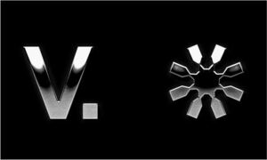

Trade Mark Journal No.2025/043 24 October 2025
WO0000001865080 (14,35)
Office of origin: Australia
Date of International Registration:20 May 2025
Date of designation in the UK:
20 May 2025

- Class 14
- Jewellery items; items of jewellery; precious jewellery; jewellery made of precious metals; gold jewellery; jewellery chains; personal items of jewellery; jewellery with embroidered precious metal; silver ornaments in the nature of jewellery; personal jewellery items; jewellery for men; ornaments of silver in the nature of jewellery; chains [jewellery]; jewellery coated with precious metal alloys; silver jewellery; jewellery with embroidered silver; jewellery cases of precious metal; jewellery cases of precious metals; jewellery for children; rings [jewellery], not of precious metal; articles of jewellery coated with precious metals; jewellery made of gold; gold thread [jewellery]; jewellery made from gold; jewellery made of silver; platinum jewellery; jewellery cases, not of precious metal; gold thread jewellery; jewellery foot chains; costume jewellery; jewellery bags of textile material; jewellery boxes, not of precious metal; jewellery boxes, not of metal; children's jewellery; neck chains [jewellery]; jewellery made from silver; men's jewellery; jewellery, precious stones; jewellery ornaments; jewellery necklaces; jewellery with precious metal embroidery; necklaces [jewellery]; jewelry; jewellery for women; jewellery for personal wear; pendants as jewellery; pendants being jewellery; jewellery with gold embroidery; jewellery with silver embroidery; beads for jewellery; jewellery for personal adornment; jewellery with diamonds; diamond jewellery; jewellery watches; jewellery rings; pendants [jewellery]; fashion jewellery; jewellery charms; ear ornaments in the nature of jewellery; jewellery items for personal adornment; jewellery for the head; items of jewellery for personal adornment; charms for jewellery; jewelry items; jewellery brooches; jewellery incorporating diamonds; shoe jewellery; jewelry with precious metal embroidery; jewellery articles; necklaces [jewellery and imitation jewellery]; beads for making jewellery; ornaments of precious metal in the nature of jewelry; rings [jewelry] of precious metal; pendants as jewelry; hat jewellery; jewellery boxes; gold rings [jewellery]; jewellery cases; items of jewelry; glass jewellery; pendants [jewelry]; necklaces [jewelry]; jewellery made of crystal coated with precious metals; jewelry necklaces; rings being jewelry; pearls [jewellery]; jewelry rings; rings [jewelry]; precious jewelry; jewelry with diamonds; crystal jewellery; jewelry made of precious metals; beads for jewelry; ear ornaments in the nature of jewelry; fashion jewelry; earrings of precious metal; earrings; stud earrings; hoop earrings; gold earrings; silver earrings; clip-on earrings; gold-plated earrings; silver-plated earrings; earrings made of golden grass fibers; drop earrings; clip earrings; earrings made of golden grass fibres; paste earrings; jewelry for women; shoe jewelry; diamond jewelry; jewelry for the head; beads for making jewelry; ear studs; hat jewelry; jewelry clips for adapting pierced earrings to clip-on earrings; jewellery clips for adapting pierced earrings to clip-on earrings; women's jewelry; jewelry articles; ear studs in gold and silver; jewelry for pets; imitation jewelry; jewelry for children; jewellery; piercing jewellery; piercing jewelry; pierced earrings; body-piercing rings; body-piercing studs.
- Class 35
- Wholesale services connected with the sale of jewellery; wholesale services relating to jewellery; wholesale services in relation to jewellery; wholesale store services connected with the sale of clothing; wholesale services relating to clothing; retail and wholesale services in relation to precious metals and their alloys; wholesale services connected with the sale of clothing; advertising services relating to jewellery; on-line retail store services connected with the sale of jewelry; on-line retail services relating to jewelry; on-line retail services relating to jewellery; wholesale services relating to jewelry; wholesale services connected with the sale of jewelry; wholesale store services connected with the sale of jewelry; wholesale services in relation to jewelry; retail and wholesale services connected with the sale of jewellery, precious and semi precious stones; retail and wholesale services connected with the sale of jewellery boxes and watch boxes; retail and wholesale services connected with the sale of jewelry, precious and semi-precious stones; retail and wholesale services in relation to jewelry boxes and watch boxes; retail and wholesale services in relation to jewelry, precious and semi-precious stones; on-line wholesale store services connected with the sale of jewelry; retail and wholesale services in relation to precious stones; retail and wholesale services connected with the sale of fashion accessories; retail services connected with the sale of jewelry; retail store services connected with the sale of jewelry; retail services relating to jewelry; retail services in relation to jewelry; online retail services relating to jewellery; online wholesale store services connected with the sale of jewelry; online retail store services connected with the sale of jewelry; retail store services connected with the sale of jewelry; retail services connected with the sale of jewellery; retail services relating to jewellery; retail services in relation to jewellery; online retail services relating to jewelry; retail store services connected with the sale of clothing; retail services relating to clothing; retail services connected with the sale of clothing; online retail services relating to clothing.
Funk Fashion Pty Ltd as trustee for the Funk Fashion Trust
Representative: Funk Fashion Pty Ltd as trustee for the Funk Fashion Trust, 13 Howes St, Airport West VIC 3042, AUSTRALIA